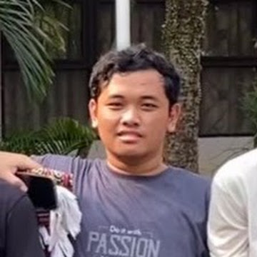

Dishonored meningkatkan standar genre ini dengan membuka kemungkinan untuk menjadi pembunuh bayaran yang tangguh. Saat Corvo berhasil mencapai puncak rantai makanan politik dalam usahanya membalas dendam, keterampilan supernaturalnya berkembang sedemikian rupa sehingga melengkapi persenjataannya yang semakin berkembang. Teleportasi menjadi hal yang penting dalam navigasi seperti halnya agresi dan pelarian. Hembusan angin mendorong granat atau jebakan serta melemparkan manusia melalui jendela. Kepemilikan, memperlambat waktu, dan memanggil makhluk memungkinkan peluang baru dalam penipuan. Jika digabungkan, kemampuan ini memungkinkan Anda mengeksploitasi lingkungan dan pertemuan dengan cara yang berbeda sesuai pendekatan setiap pemain. Dan cara Anda menangani situasi tersebut memiliki efek permanen pada atmosfer dunia yang menyerapnya, cara orang berperilaku, tata letak misi masa depan, dan kesimpulan yang kuat untuk sebuah pengalaman berlapis--sebuah pengalaman yang akan berbeda dan menarik bagi setiap orang.
Developer Telltale Games mempunyai andil besar dalam menghidupkan kembali dan mempertahankan genre game petualangan tradisional, dan The Walking Dead adalah upaya utamanya dalam mendefinisikan game petualangan untuk generasi baru. Lebih baik lagi, mereka memanfaatkan salah satu Franchises modern yang paling dicintai di seluruh dunia --The Walking Dead--dan membawanya dengan mulus dan berseni ke dalam ruang permainan. The Walking Dead adalah contoh tak tertandingi dalam keberhasilan penggunaan kekayaan intelektual dengan cerita yang sudah berkembang dengan baik dan menciptakan cabang bermakna yang terjalin dengan pengetahuan yang sudah ada. Pendekatan episodiknya--memaksa gamer untuk menunggu di antara setiap episode--berhasil menciptakan ketegangan dan antisipasi. The Walking Dead adalah sesuatu yang istimewa. Dengan memberi pemain opsi untuk menjalin hubungan dan membuat pilihan yang mengisi cerita, The Walking Dead membungkus Anda dalam peristiwanya dan membuat Anda peduli dengan cara yang hanya bisa dilakukan oleh beberapa video game.
Nama Forza memang tidak asing lagi di industri game, apalagi
bagi Anda yang memiliki XBOX 360. Ia menjadi saingan utama franchise Gran Turismo untuk Playstation 3 dan terhitung selalu
berhasil menghadirkan kualitas gameplay yang luar biasa untuk setiap serinya. Namun berbeda dengan seri-seri sebelumnya,
Forza Horizon mengubah mekanisme gameplay dasarnya menjadi sebuah game racing open-world. Setting yang indah, dipadukan
dengan pondasi gameplay utama yang tetap menghibur dan seru menjadikan seri ini pantas untuk menyabet sebagai game balap
terbaik di tahun 2012 ini.
Jika Anda menyukai Forza 4, ini adalah teman yang sempurna. Jika Anda menyukai mobil, ini penting.
Mungkin sulit untuk mendorong game balap pada generasi akhir ini, tetapi Playground Games tidak hanya melakukan hal tersebut
di sini. Itu menguburnya. Hadirin sekalian, jalan terbuka menanti. Dan pengembang balap dunia? Playground Games baru saja memberi
tahu Anda.
Treyarch bisa saja mengambil formula Call of Duty, memuntahkannya,
dan duduk santai sementara pundi-pundi meluap. Namun sebaliknya, pengembang menciptakan salah satu penawaran penembak terkuat tahun
ini. Latar kampanye dalam waktu dekat memiliki cerita bercabang dengan berbagai akhir yang mendorong banyak permainan, dan senjata
futuristik adalah angin segar.
Tentu saja, beberapa perubahan terpenting datang dalam bentuk perubahan multipemain. mereka menerima
peningkatan besar dalam keseimbangan dan penyesuaian pemain dengan sistem Pick 10 dan Scorestreak yang baru, dan mode Zombies khas
Treyarch juga berevolusi, berubah menjadi permainan yang hampir berdiri sendiri dengan tambahan Tranzit, Grief, dan Custom survival.
Bahkan fitur bonus, seperti CODcasting dan mode Teater yang diperbarui, membantu meningkatkan game ini lebih tinggi lagi di atas
penembak standar. Sulit menemukan game yang selengkap paket Black Ops II.
Sepertinya XCOM berada di jalur standar untuk generasi saat ini
dengan beralih ke FPS, tetapi hal lucu terjadi dalam perjalanan ke pasar. Pengembang di balik seri Civilization membuat pembaruan
XCOM mereka sendiri, yang sangat menghormati apa yang membuat seri strategi ini begitu berkesan di masa lalu, sekaligus membuatnya
terasa terkini bahkan di konsol.
Game Turn Based ini memberi Anda tanggung jawab atas umat manusia lainnya yang berjuang untuk
melawan invasi alien. Setiap situasi mengerikan dan penuh dengan pilihan sulit, apakah itu menempatkan Sniper Anda di tempat
terbaik atau memilih untuk menghabiskan $100 terakhir Anda pada salah satu dari tiga proyek teknik yang diperlukan.
| No | Game | Penghargaan |
|---|---|---|
| 1 | Dishonored | Best Action Adventure Game |
| 2 | The Walking Dead | Game of the Year |
| 3 | Forza Horizon | Best Racing Game |
| 4 | Call of Duty Black Ops II | Best Shooter Game |
| 5 | XCOM: Enemy Unknown | Best Strategy Game |
Yang mengerjakan tugas ini:
| Nama | : Muhammad Surya Putra Ramaditya |
| NIM | : 11210251000111 |
|  |